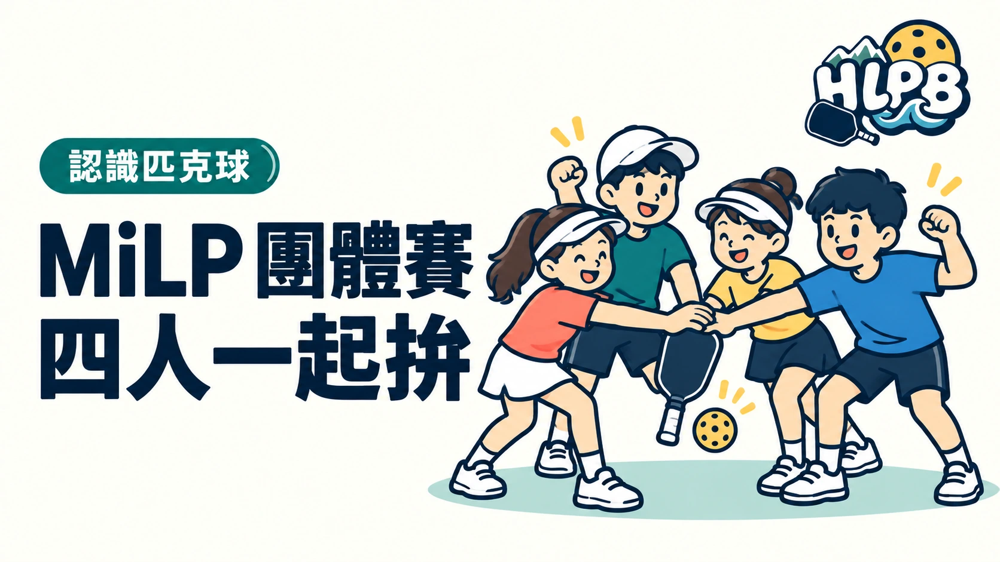

MiLP 是 Minor League Pickleball 的簡稱。傳統四人制由兩男、兩女組隊，一次隊伍對戰包含女雙、男雙與兩場混雙，考驗的不只是球技，還有搭配與團隊合作。
四場打完若是 2：2，就進入 DreamBreaker 單打決勝。四名隊員依排定順序輪流上場，每人打四個回合，再換下一位。
傳統 MiLP 採每球得分，通常打到 21 分、贏兩分，並要求在自己發球時取得致勝分。雙打平常不會每得一分就交換左右位置，這點和熟悉的傳統計分不同。
另外也有三人制 MiLP v3。看到「MiLP」別直接套用四人制，先看該場簡章採哪個版本。
最後查證：2026-10-05｜資料來源：MiLP 官方規則（2026/9/7 更新）、MLP MiLP 介紹
返回文章列表